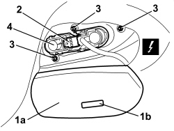
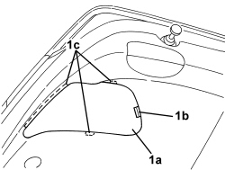
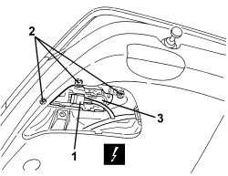

5540A68 INTERIOR REAR LIGHT (ONE), LEFT OR RIGHT - R.R.
- Path
- Procedures > 55 ELECTRICAL EQUIPMENT > 5540 EXTERIOR LIGHTING > 5540A LIGHTING > 5540A68 INTERIOR REAR LIGHT (ONE), LEFT OR RIGHT - R.R.
- Kind
- repair procedure (removal / refitting; the operation number is the code)
- Applies to
- all engines; all production periods
- Interactive page
- https://sloeber94.github.io/elrnDB/alfa/159/en/#/939011024
Applies to: all engines; all production periods
 Removing
Removing
 Refitting
Refitting- Open the boot lid.
1. Open the light cover (1a) releasing the retainer (1b).
2. Disconnect the electrical connection.
Description | Component |
|---|---|
LEFT REAR LIGHT CLUSTER (MOVING SECTION ON BOOT LID) | See F035 LEFT REAR LIGHT CLUSTER (MOVING SECTION ON BOOT LID) |
RIGHT REAR LIGHT CLUSTER (MOVING SECTION ON BOOT LID) | See F036 RIGHT REAR LIGHT CLUSTER (MOVING SECTION ON BOOT LID) |
3. Undo the light retaining nuts.
4. Remove the light from the outside.

Applies to: all engines; all production periods
Refitting
Removing- Check that the light is not damaged.
- Position the light in the housing.
- Tighten the nuts.
- Connect the electrical connection.
- Position the light cover and attach the retainer.
- Close the boot lid.
- Check that the inner rear light cluster lights are working.
Applies to: all engines; all production periods; only with equipment: Station Wagon
Removing
Refitting- Open the tailgate.
1. Remove the rear light cluster access cover (1a) releasing the flexible retainer (1b) and then the rigid retainers (1c).

Applies to: all engines; all production periods; only with equipment: Station Wagon
1. Disconnect the electrical connection.
Description | Component |
|---|---|
LEFT REAR LIGHT CLUSTER (MOVING SECTION ON BOOT LID) | See F035 LEFT REAR LIGHT CLUSTER (MOVING SECTION ON BOOT LID) |
RIGHT REAR LIGHT CLUSTER (MOVING SECTION ON BOOT LID) | See F036 RIGHT REAR LIGHT CLUSTER (MOVING SECTION ON BOOT LID) |
2. Undo the light retaining nuts.
3. Remove the light from the outside.

Applies to: all engines; all production periods; only with equipment: Station Wagon
Refitting
Removing- Check that the light is not damaged.
- Position the light in the housing.
- Tighten the nuts.
- Connect the electrical connection.
- Place the light cluster access cover in position and attach the rigid retainers and then the flexible retainer.
- Close the tailgate.
- Check that the inner rear light cluster lights are working.
Topics linked from this page (2)
- F035 LEFT REAR LIGHT CLUSTER (MOVING SECTION ON BOOT LID)
- F036 RIGHT REAR LIGHT CLUSTER (MOVING SECTION ON BOOT LID)
Topics that link to this page (22)
- T025 WIND NOISE FROM THE REAR AREA
- 7205E56 STRIPPING TAILGATE
- E2010 SIDE LIGHTS/NUMBER PLATE LIGHT - WIRING DIAGRAM
- E2010 SIDE LIGHTS/NUMBER PLATE LIGHT - COMPONENT LOCATION
- E2010 SIDE LIGHTS/NUMBER PLATE LIGHT - WIRING DIAGRAM
- E2010 SIDE LIGHTS/NUMBER PLATE LIGHT - COMPONENT LOCATION
- E2010 SIDE LIGHTS/NUMBER PLATE LIGHT - WIRING DIAGRAM
- E2010 SIDE LIGHTS/NUMBER PLATE LIGHT - COMPONENT LOCATION
- E2010 SIDE LIGHTS/NUMBER PLATE LIGHT - WIRING DIAGRAM
- E2010 SIDE LIGHTS/NUMBER PLATE LIGHT - COMPONENT LOCATION
- E2022 REVERSING LIGHTS - WIRING DIAGRAM
- E2022 REVERSING LIGHTS - COMPONENT LOCATION
- E2022 REVERSING LIGHTS - WIRING DIAGRAM
- E2022 REVERSING LIGHTS - COMPONENT LOCATION
- E2022 REVERSING LIGHTS - WIRING DIAGRAM
- E2022 REVERSING LIGHTS - COMPONENT LOCATION
- E2022 REVERSING LIGHTS - WIRING DIAGRAM
- E2022 REVERSING LIGHTS - COMPONENT LOCATION
- E2031 REAR FOG LAMPS - WIRING DIAGRAM
- E2031 REAR FOG LAMPS - COMPONENT LOCATION
- E2031 REAR FOG LAMPS - WIRING DIAGRAM
- E2031 REAR FOG LAMPS - COMPONENT LOCATION